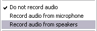

(From the main menu, choose Options->Record audio from speakers)

By selecting this option, CamStudio will record the output from your speakers while it is capturing video. This is ideal for recording a gaming session or a movie stream. You will need a sound card with speakers attached to use this option.
Please note that not all soundcards support this function, though most modern and branded soundcards usually allow you to record from your speakers.
(From the main menu, choose Options->Audio Options->Audio Options for Speakers)
Most of the time, you only need to adjust the Playback Volume and Recording Volume.
The Playback Volume controls the volume of your speakers. The sound signals going to your speakers and can originate from a variety of sources. Examples include sound from CD, Microphone, MIDI playback and Wave playback.
The Recording Volume controls the volume of the recording line.
Important: For a good quality recording, it is important that both the Playback Volume and Recording Volume are not set too high.
For most users, the Soundcard Device will already be pointing correctly at your soundcard. However, if it isn't or if your system has more than one soundcard, you will need to set it to the correct one. If the soundcard device is changed, the recording line will no longer be valid and you will need to perform a manual/automatic search for the line.
In order for CamStudio to record sound from your speakers, it has to search your soundcard for the appropriate line to use. Failure to find the line simply means that CamStudio is unable to record from your speakers. Some soundcards do not support this capability.
The searching is usually done automatically when you click (Options > Record Audio > Record from speakers). However, if that does not work, you will have to use one of the two methods provided by CamStudio below to carry out additional searching.
By clicking the Automatic Search button, CamStudio will play a few tones and attempt to automatically detect the line.
If you select the Manual Search button, CamStudio will ask you a few questions on whether you have heard a tone when a particular line is used. You will need to turn on your speakers and listen carefully.
Notes:
Normally, you do not need to perform a search at all because CamStudio will automatically do that for you when you choose the Record Audio from Speakers option.
Please make sure that the Default Recording Device and Default Playback Device is set correctly to your soundcard. CamStudio makes use of certain recording functions that depend on this two devices being properly set. These can be accessed in Control Panel :: Sounds and Audio Devices :: Audio (Tab) in Windows XP. If you have only one soundcard installed in your system, and have not installed other virtual sound devices, you usually do not need to be worried about this.
If the recording is set incorrectly, you will not get any audio from your speakers.
If you are unable to find a line after the Automatic Search and Manual Search, chances are that your soundcard do not support this function.
Please ensure you have installed the latest soundcard drivers to take advantage of this feature.